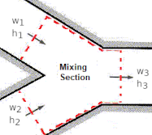

Humid air leaving an air conditioning system at T1°C and RH1% at a rate of V1 (m3/time) is mixed adiabatically with outside air at T2°C and RH2% at a rate of V2 (m3/time).
Assuming the whole process takes place at P(kPa), determine
A) Specific and relative humidities,
B) Dry-bulb temperature,
C) Flow rate (m3/time).
Reference: Cengel YA, Boles MA, Kanaoglu M (2019). Thermodynamics: an engineering approach, 9th edition, McGraw-Hill Education.